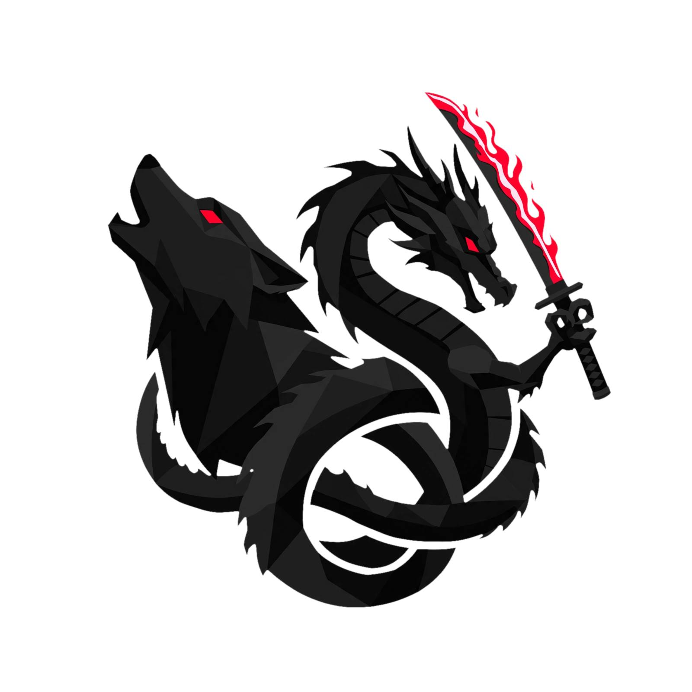
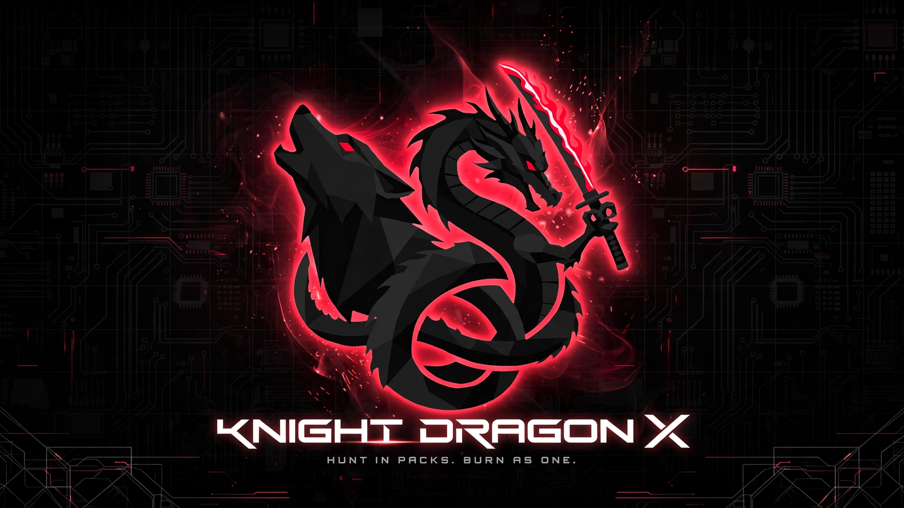
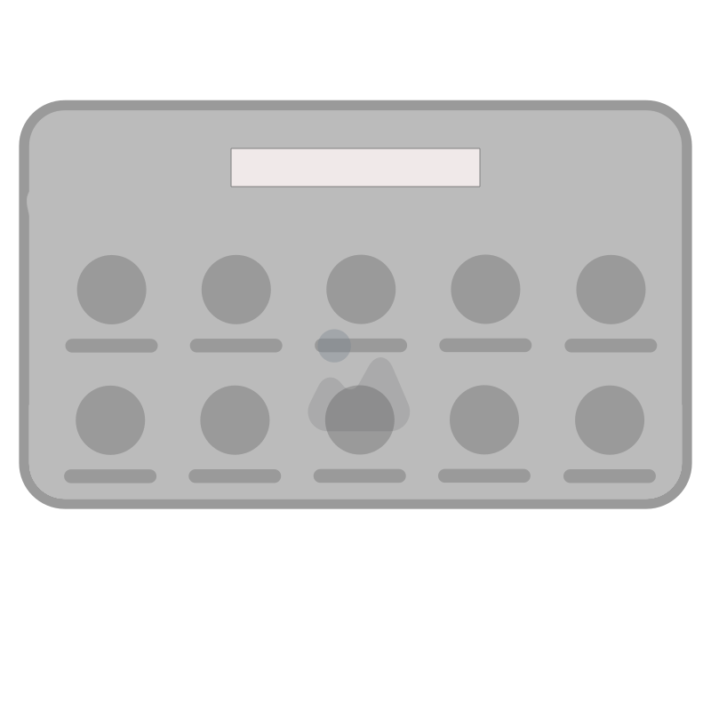
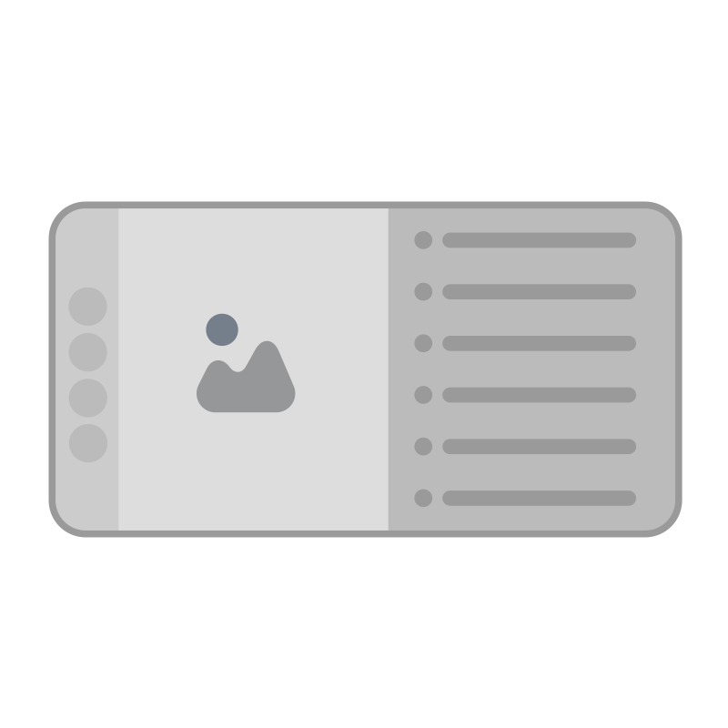
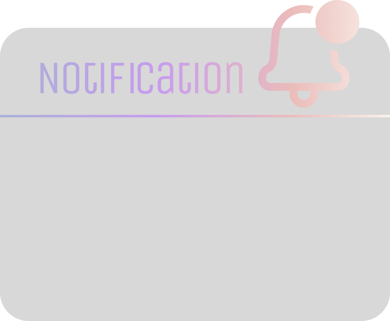

Arch-based · Hyprland 0.56+ · HyDE · Wallbash · KDX Branding
A professional Arch-based environment with the KnightDragonX brand identity baked in.
Gaming workflow with optimized settings, Game Mode, and controller support. Steam, Proton, and Wine ready.
Built-in AP mode repeater. Share your internet from any WiFi connection to mobile devices via KDX-Hotspot.
Custom SDDM theme, Wallbash theming, Rofi launcher, and Waybar styled with the official KDE red (#FF0033).
HyDE shell integration for one-click theme switching, wallpaper management, and dynamic theming.
Timeshift and Snapper integration for instant rollback. Stable restore point at 2026-07-26.
Kitty terminal, VS Code theme, Git integration, and a complete dotfiles suite for reproducible setups.
A complete HyDE theme with KDX red (#FF0033) and orange (#FFAA00) accents across every layer.
Dynamic borders, blur, shadows, and animations with Wallbash integration.
Dynamic theming extracted from wallpaper colors. Auto-switches GTK, Qt, and shell accents.
Qt widget styling with SVG-generated themes. Matches the KDX palette perfectly.
Lock screen with dynamic Wallbash colors, KDX logo, and time display.
Application launcher with KDX red accents, rounded corners, and blur effects.
Status bar with workspace indicators, system stats, and KDX-branded modules.
GPU-accelerated terminal with KDX color palette and transparency support.
Login screen with KDX wallpaper, red accents, and branded corners theme.
A preview of the KnightDragonX OS desktop experience.





Built on proven, modern Linux technologies.
Rolling release base with AUR support
Dynamic tiling Wayland compositor v0.56+
Shell integration and theme management
Login manager with Corners theme
Highly customizable status bar
GPU-accelerated terminal emulator
Application launcher and window switcher
Dynamic theming based on wallpaper
Minimum and recommended specs for running KnightDragonX OS.
Arch Linux or Arch-based distro
AMD / Intel / NVIDIA
Minimum for Hyprland + apps
Base system + configs + apps
AP + managed concurrent mode
UEFI recommended
Essential keybindings for the KDX Hyprland desktop.
Complete step-by-step Arch Linux install with KDX configuration and black screen fixes.
Boot the Arch ISO, verify UEFI mode, identify your GPU, and connect to the internet.
# Verify UEFI ls /sys/firmware/efi/efivars # Identify GPU (critical for avoiding black screen) lspci -k -nn | grep -A 5 "VGA" # Connect to WiFi if no ethernet iwctl # station wlo1 connect YOUR_SSID
Create GPT partitions: 512MB EFI + root partition. Format as FAT32 and ext4.
# Example: /dev/nvme0n1 fdisk /dev/nvme0n1 # Create EFI (512M) + root (rest) partitions mkfs.fat -F32 /dev/nvme0n1p1 mkfs.ext4 /dev/nvme0n1p2 mount /dev/nvme0n1p2 /mnt mkdir -p /mnt/boot mount /dev/nvme0n1p1 /mnt/boot
Install core system, GPU drivers, and essential packages. Install GPU drivers BEFORE rebooting.
# Base system pacstrap /mnt base linux linux-firmware base-devel # GPU drivers (choose one) # NVIDIA (MOST IMPORTANT - prevents black screen): pacstrap /mnt nvidia-dkms nvidia-utils # AMD: # pacstrap /mnt mesa xf86-video-amdgpu # Intel: # pacstrap /mnt mesa intel-media-driver # Essential packages pacstrap /mnt \ git vim nano networkmanager \ hyprland xdg-desktop-portal-hyprland \ sddm waybar rofi kitty \ kvantum qt5ct qt6ct \ dunst swaync \ pipewire wireplumber \ fastfetch hyde-shell \ efibootmgr grub os-prober
Set timezone, locale, hostname, install GRUB bootloader, and create user. NVIDIA users must add kernel parameters.
# Generate fstab and chroot genfstab -U /mnt >> /mnt/etc/fstab arch-chroot /mnt # Timezone & locale ln -sf /usr/share/zoneinfo/Asia/Kolkata /etc/localtime hwclock --systohc locale-gen echo "LANG=en_US.UTF-8" > /etc/locale.conf # Hostname echo "knightdragonx" > /etc/hostname # GRUB (NVIDIA: add kernel params) grub-install --target=x86_64-efi --efi-directory=/boot --bootloader-id=GRUB # For NVIDIA, create /etc/default/grub with: # GRUB_CMDLINE_LINUX_DEFAULT="quiet splash module_blacklist=nouveau nvidia_drm.modeset=1" grub-mkconfig -o /boot/grub/grub.cfg mkinitcpio -P # Root password & user passwd useradd -m -G wheel,audio,video -s /bin/zsh kdx passwd kdx # Edit sudo: uncomment %wheel ALL=(ALL:ALL) ALL EDITOR=vim visudo
Configure SDDM display manager and enable essential services.
# SDDM config mkdir -p /etc/sddm.conf.d cat > /etc/sddm.conf.d/the_hyde_project.conf << 'EOF' [Autologin] Relogin=false Session= User= [General] HaltCommand=/usr/bin/systemctl poweroff RebootCommand=/usr/bin/systemctl reboot DisplayServer=wayland [Theme] Current=Corners [Users] MaximumUid=60513 MinimumUid=1000 EOF # Enable services systemctl enable NetworkManager systemctl enable sddm # Exit and reboot exit umount -R /mnt reboot
Boot into your system. If you get a black screen, follow the recovery steps below before proceeding.
# If black screen occurs: # 1. Switch to TTY: Ctrl+Alt+F2 # 2. Check logs: journalctl -b -p err --no-pager | tail -50 # 3. Test Hyprland manually: export XDG_RUNTIME_DIR=/run/user/$(id -u) exec Hyprland # 4. If Hyprland starts in TTY but not SDDM: # The issue is with SDDM/display manager # Try: DisplayServer=wayland in sddm.conf
Clone the repo and copy configs to restore the KDX desktop.
# Clone repo git clone https://github.com/KSitharanimsara/knightdragonx-os.git cd knightdragonx-os # Copy configs cp -r configs/hyprland/* ~/.config/hypr/ cp -r configs/waybar/* ~/.config/waybar/ cp -r configs/rofi/* ~/.config/rofi/ cp -r configs/kitty/* ~/.config/kitty/ cp -r configs/kvantum/* ~/.config/Kvantum/ cp -r configs/hyde/* ~/.local/share/hyde/ cp configs/system/zshrc ~/.zshrc # Apply SDDM theme sudo cp -r configs/sddm/corners-theme /usr/share/sddm/themes/Corners sudo cp configs/sddm/sddm.conf /etc/sddm.conf.d/the_hyde_project.conf # Reload Super + Shift + R
Already have Arch installed? Get the KDX configs in 60 seconds.
Download the KDX configuration and branding files.
git clone https://github.com/KSitharanimsara/knightdragonx-os.git cd knightdragonx-os
Restore your user configuration files.
# Hyprland, Waybar, Rofi, Kitty, Kvantum cp -r configs/hyprland/* ~/.config/hypr/ cp -r configs/waybar/* ~/.config/waybar/ cp -r configs/rofi/* ~/.config/rofi/ cp -r configs/kitty/* ~/.config/kitty/ cp -r configs/kvantum/* ~/.config/Kvantum/ # HyDE shell cp -r configs/hyde/* ~/.local/share/hyde/ # Shell configs cp configs/system/zshrc ~/.zshrc cp configs/system/bashrc ~/.bashrc
Set up the login screen with KDX branding.
sudo cp -r configs/sddm/corners-theme /usr/share/sddm/themes/Corners sudo cp configs/sddm/sddm.conf /etc/sddm.conf.d/the_hyde_project.conf
Set up the WiFi repeater service for mobile sharing.
sudo cp scripts/hotspot/* /etc/hostapd/ /etc/dnsmasq.d/ /etc/sysctl.d/ /etc/systemd/system/ /usr/local/bin/ sudo systemctl enable --now kdx-hotspot
Reload Hyprland and experience the KDX desktop.
Super + Shift + R
Need to install Arch Linux from scratch?
Read Full Installation GuideEverything you need to install, configure, and troubleshoot KnightDragonX OS.
Complete step-by-step Arch Linux install with KDX setup. Includes GPU driver installation, SDDM configuration, and post-install steps.
Read Guide →Diagnose and fix black screen issues. Covers NVIDIA/AMD/Intel GPU problems, SDDM X11 conflicts, kernel parameters, and recovery steps.
Read Guide →Complete WiFi repeater/AP bridge guide with NAT and DHCP.
Read Guide →Logos, color palette, SDDM theme, and Wallbash integration.
Read Guide →Hyprland, Waybar, Rofi, Kitty, Kvantum, HyDE, and shell configs.
Read Guide →Timeshift and Snapper backup workflows and recovery procedures.
Read Guide →Common issues, fixes, and emergency recovery steps.
Read Guide →Quick answers to common questions about KnightDragonX OS.
hydectl theme set <theme-name> to switch themes. List available themes with hydectl theme list. The KnightDragonX theme uses Wallbash for dynamic colors based on your wallpaper.Ctrl+Alt+F2. Check logs with journalctl -b -p err --no-pager | tail -50. For NVIDIA, ensure you installed nvidia-dkms and added kernel parameters module_blacklist=nouveau nvidia_drm.modeset=1. See the Black Screen Fix guide.sudo systemctl enable --now kdx-hotspot. SSID is KDX-Hotspot and password is kdx12345. Requires a WiFi adapter supporting AP + managed concurrent mode.wal and applies them to GTK, Qt (Kvantum), Hyprland borders, and terminal themes. Edit wallbash.svg to customize the palette generation.mesa and the appropriate driver (xf86-video-amdgpu or intel-media-driver). All KDX theming works regardless of GPU vendor.docs/ARCH-INSTALL-GUIDE.txt. All configs can be applied to any existing Arch-based system.Clone the repository or download an archive to get started.
Best for developers. Full history, easy updates, and instant access to all configs.
View on GitHubNo Git required. Download the latest stable configs as a ZIP archive.
Download main.zipJust want the WiFi hotspot service? Grab the scripts and configs directly.
View Hotspot Files